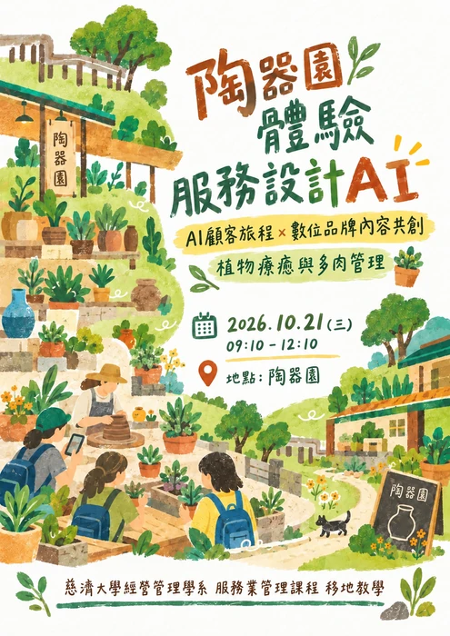
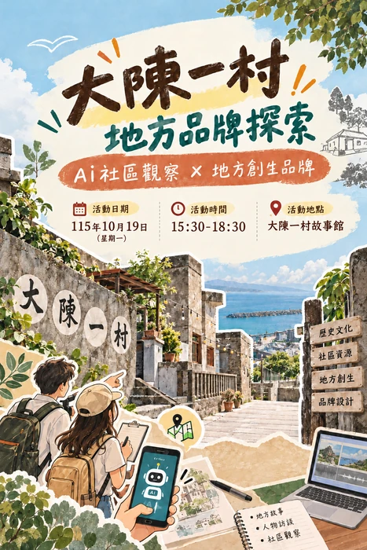
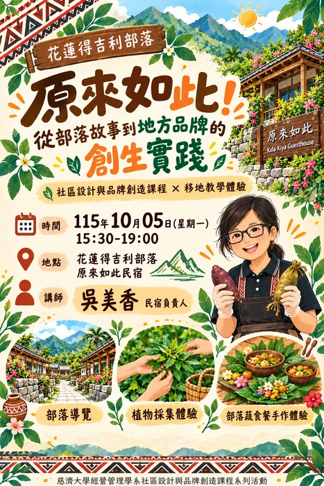
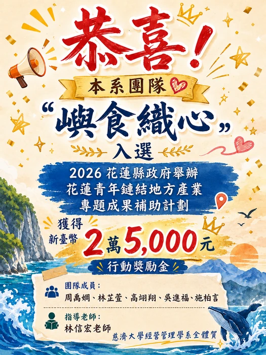
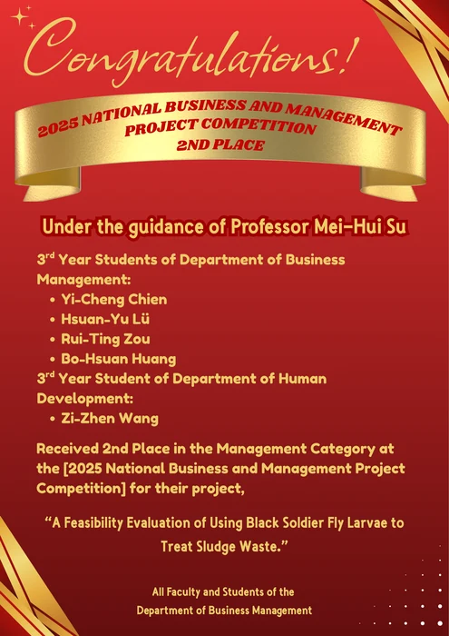
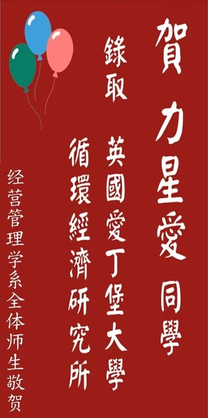
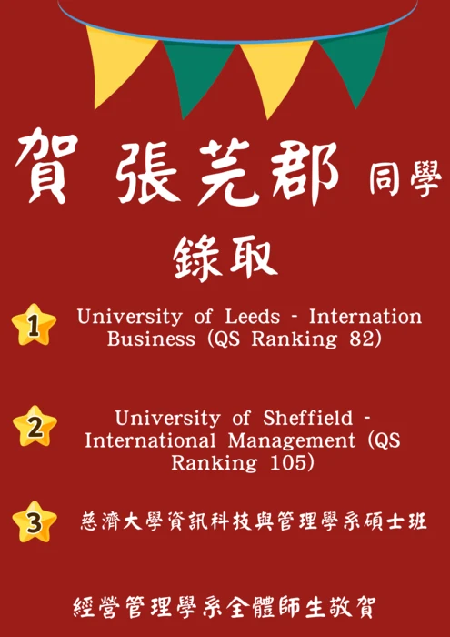

News & announcements

Service design at a pottery workshop
Read the story
Dachen First Village: exploring local brands
Read the story
Turning play into a business
Read the story
From indigenous stories to local brands
Read the story
From brands to the service floor
Read the story
Student team selected for a Hualien youth project grant
Read the story
Creating professional content with a smartphone
Read the story![[Department Achievement] Business Management students won 3rd Place in Tzu Chi University’s “Maker+ Are You Ready?” Proposal Competition.](assets/source-images/620a7a8aab1701d2.webp)
[Department Achievement] Business Management students won 3rd Place in Tzu Chi University’s “Maker+ Are You Ready?” Proposal Competition.
Read the story
[Department Achievement] Congratulations! Guided by Prof. Mei-Hui Su, students won Second Place (Management Category) at the 2025 National Business & Management Project Competition.
Read the story![[Department Achievement] Congratulations! Guided by Prof. Chun-Min Lin, students Guang-Ming Bu and Kai-Te Hsu won an Honorable Mention (Management Category) at the 2025 National Business & Management Project Competition.](assets/source-images/d2665d1c607c7407.webp)
[Department Achievement] Congratulations! Guided by Prof. Chun-Min Lin, students Guang-Ming Bu and Kai-Te Hsu won an Honorable Mention (Management Category) at the 2025 National Business & Management Project Competition.
Read the story
[Department Achievement] Congratulations! Our student Xing-Ai Li has been admitted to the Master's Program at the Institute for Circular Economy at the University of Edinburgh.
Read the story![[Department Achievement] Congratulations to our student Chiang-Hao He for being accepted into the Graduate Institute of Information Systems and Applications at National Tsing Hua University!](assets/source-images/532348ab7c8e5000.webp)
[Department Achievement] Congratulations to our student Chiang-Hao He for being accepted into the Graduate Institute of Information Systems and Applications at National Tsing Hua University!
Read the story
[Department Achievement] Congratulations to senior Yuan-Chun Chang on receiving offers from the University of Leeds (International Business, QS 82), University of Sheffield (International Management, QS 105), and Tzu Chi University (IT & Management).
Read the story![[Department Industry Practice] Creative Metalworking: A Cross-disciplinary Exploration and Hands-on Practice from Craft to Commercial Value.](assets/source-images/7e6c4b402149c7d9.webp)
[Department Industry Practice] Creative Metalworking: A Cross-disciplinary Exploration and Hands-on Practice from Craft to Commercial Value.
Read the story
【Announcement of Departmental Lecture】Beauty in diverse perspectives There is no single standard
Read the story2010-03-01 2010年納稅服務隊甄選辦法
Read the story2009-08-12 花蓮高商-策略聯盟計劃
Read the story會計研究發展基金會舉辦免費「2009年大專院校會計系清寒學生會計稅務技能培訓班」
Read the storyNo stories match your search.